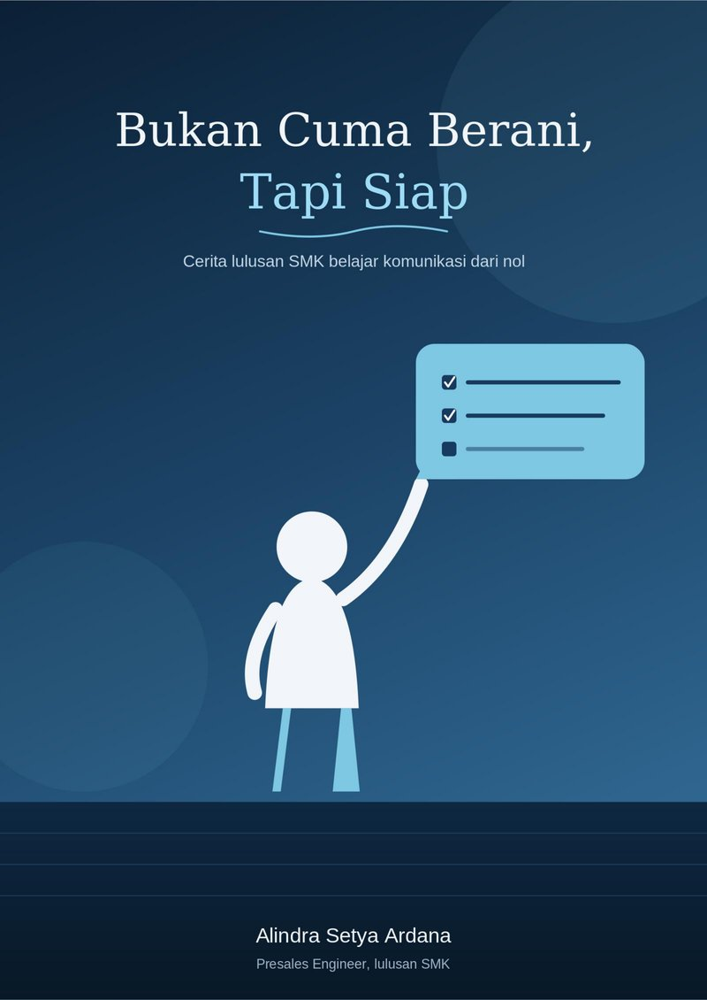

Buku · Ebook Gratis
Bukan Cuma Berani, Tapi Siap
Cerita lulusan SMK belajar komunikasi dari nol, dari anak introvert yang susah nyapa orang sampai dipercaya customer sebagai Presales Engineer di Jakarta. Ditulis jujur dari pengalaman kerja langsung, termasuk bagian-bagian yang gagal.
"Saya cuma baca teks di slide. Itu titik saya sadar, berani doang nggak cukup."

Detail Buku
Ringkasan
Tentang Buku Ini
Buku ini bukan soal cara jago ngomong di panggung. Ini soal cara berkomunikasi yang bisa dipercaya di kerja sehari-hari, mulai dari chat singkat ke atasan, koordinasi sama tim, sampai presentasi ke customer. Berdasarkan pengalaman Alindra sendiri sebagai Presales Engineer, dua faktor yang paling sering nentuin apakah komunikasi dipercaya orang lain atau nggak adalah keberanian dan persiapan. Tanpa keberanian, orang nggak akan pernah coba. Tanpa persiapan, keberanian itu cuma jadi PD kosong yang lama-lama bikin orang kehilangan kepercayaan.
Pendekatan yang dipakai bukan teori akademik, tapi cerita pengalaman kerja langsung: dari miskomunikasi lewat chat, koordinasi tim yang nggak sinkron, sampai kegagalan membaca teks slide di depan customer. Buku ini juga menyertakan data pendukung soal kenapa komunikasi jadi soft skill yang paling dicari di dunia kerja, serta kerangka latihan konkret: tahapan latihan keberanian yang realistis, dan lima kebiasaan persiapan yang bisa langsung dipraktikkan.
Untuk Siapa
Cocok Dibaca Siapa Saja
Pembaca utama buku ini adalah siswa dan lulusan SMK, terutama yang ngerasa dikotakkan sebagai "anak teknis" dan belum yakin kalau value mereka bisa lebih dari sekadar skill praktis. Tapi isinya juga relevan buat siapa aja yang kerja dan harus komunikasi tiap hari, entah itu presentasi formal, meeting kecil, atau sekadar chat kerja yang gampang disalahartikan.
Siswa & Lulusan SMK
Yang ngerasa value-nya cuma soal skill teknis dan belum yakin komunikasi itu bisa dilatih tanpa modal besar.
Pekerja Baru
Yang harus presentasi, meeting, dan koordinasi tim tapi belum pernah dapet pelatihan komunikasi formal.
Anak Teknis
Yang mikir komunikasi cuma soal keberanian, dan belum sadar persiapan juga sama pentingnya.
Struktur Buku
Daftar Isi
Bagian 1 — Kenapa Komunikasi Itu Penting
- Pembuka: Dari Sukoharjo ke Jakarta, Dipaksa Bicara
- Komunikasi Itu Lebih dari Sekadar Berani Ngomong di Panggung
- "Yang Penting PD": Setengah Benar, Setengah Nyesatin
- Bukan Cuma Perasaan Saya: Data di Baliknya
Bagian 2 — Dua Pilar
- Pilar 1: Keberanian
- Pilar 2: Persiapan
- Titik Ketemu Dua Pilar
Bagian 3 — Cara Latihannya
- Cara Latihan Keberanian yang Realistis
- Cara Latihan Persiapan dan Penyampaian
- Kesalahan yang Masih Saya Alami
Bagian 4 — Penutup
- Rangkuman: Bukan Cuma Jago di Panggung
- Pesan Penutup buat Anak SMK
Dilengkapi juga dengan glossary, lampiran checklist latihan, pertanyaan refleksi, dan daftar referensi.
Tentang Penulis
Alindra Setya Ardana
Saya lulusan SMK Negeri 5 Sukoharjo jurusan TKJ, sekarang bekerja sebagai Presales Engineer di Jakarta. Saya bukan trainer komunikasi bersertifikat, bukan juga akademisi yang riset soal public speaking. Semua yang ada di buku ini murni dari pengalaman kerja saya sendiri, termasuk bagian yang gagalnya, bukan cuma yang berhasil.